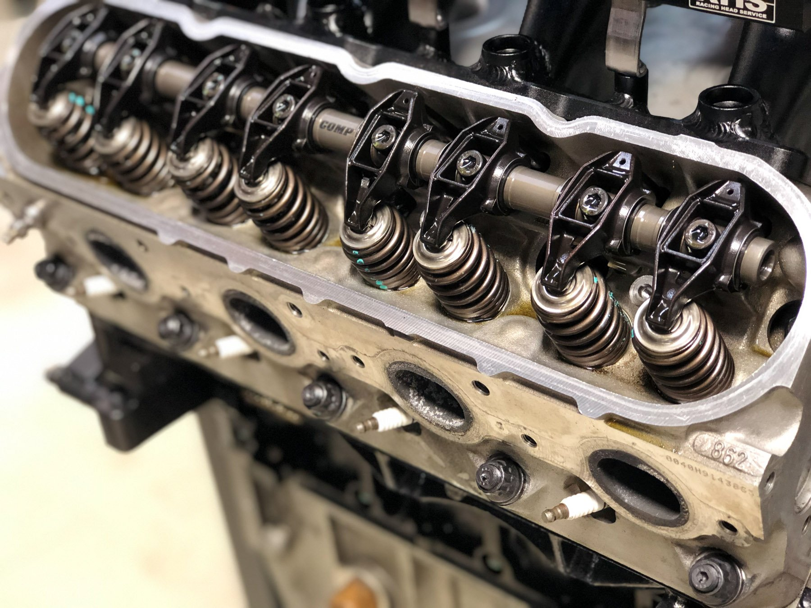
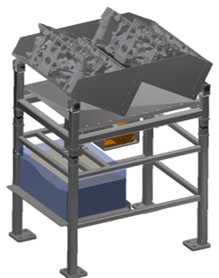
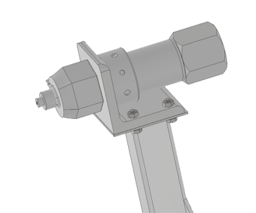
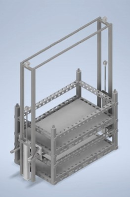
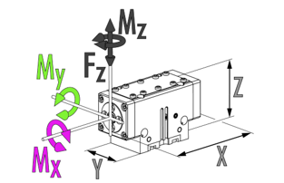

Hengerfej rakodó cella részfeladatok
Egy ipari feladat hogy megoldjuk egy gyárban az alumínium hengerfejek rakodását raklapok és kalodák között oda-vissza. A kalodák a hőkezelőbe mennek. Amikor visszaérkeznek a hengerfejekben öntés során visszamaradt homokot ki kell rázni. Emiatt a két robot közötti átrakó asztalnak rázó műveletet kell végrehajtania. Ezt követően a soron következő robot raklapra paloklja a megfelelő reakatképben a hengerfejeket. A raklapokat a celábba targoncával rakják be és azzal is távolítják el. Az átrakó asztalon töltött idő nem lehet kevesebb 40 másodpercnél, ami jelentősen nehezíti a ciklusidővel szemben támasztott követelmények betartását, jelen esetben 10 perc alatt kell a cellának egy raklapot leüríteni és egy kalodát föltölteni majd a visszaérkező kalodát leüríteni és raklapot föltölteni. A hőkezelt alkatrészekbe bele kell ütni a hőkezelés jelét. Erre szolgál a beütő állomás. A kalodák föltöltése és ürítése közben föl kell emelni a fölső felét, hogy az alsó szintet is meg tudja tölteni a robot. A megfogónak pedig több oldalról kell stabilan rögzítenie az alkatrészt.
   
| Rázóasztal | Beütő állomás | Kaloda emelő | Megfogó kialakítás |